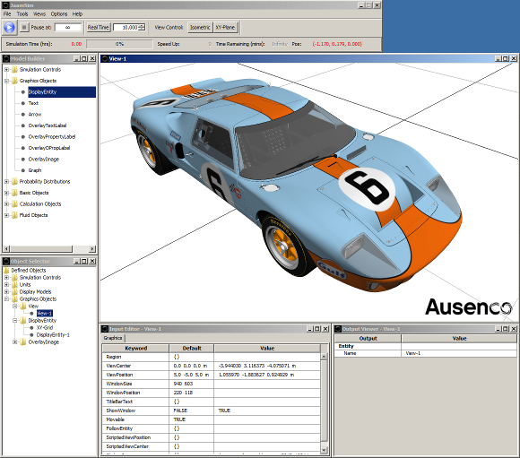

Discrete Event Simulation
JaamSim is a discrete-event simulation environment developed by Ausenco as the foundation of all our simulation applications. It represents about 10 man-years of effort since 2002 and is under continuous development to support our simulation projects. JaamSim is used daily by our team of 19 simulation analysts and programmers.
Video examples of our simulation models can be seen here.
JaamSim is written in the Java programming language and includes a drag-and-drop user interface, interactive 3D graphics, input and output processing, and model development tools and editors.
The key feature that makes JaamSim different from commercial off-the-shelf simulation software is that it allows a user to develop new palettes of high-level objects for a given application. These objects will automatically have 3D graphics, be available in the drag-and-drop interface, and have their inputs editable through the Input Editor. Users can focus on the logic for their objects without having to program a user interface and input/output processing.
All the coding for new objects is done in standard Java using standard development tools such as Eclipse. There is no need for the specialised simulation languages, process flow diagrams, or scripting languages used by commercial off-the-shelf simulation software. Model logic can be coded directly in either a event- or process-oriented style using a few simple classes and methods provided by JaamSim.
The present release includes the following palettes:
A collection of sample projects demonstrating some of JaamSim's capabilities are available below.
Example 1 - Ferrari
Example 2 - Server and Queue
Example 3 - Harmonic Oscillator
Example 4 - Railcar Animation
Example 5 - Cafe Model
JaamSim is distributed with all dependencies in a single executable, just download and run. JaamSim assumes that Java 6 or higher is already installed on your machine.
JaamSim is GPLv3
For licensing and general inquiries:
Dr. Harry King <harry.king@ausenco.com>
If you have any problems building the source or technical inquiries:
Harvey Harrison <harvey.harrison@ausenco.com>